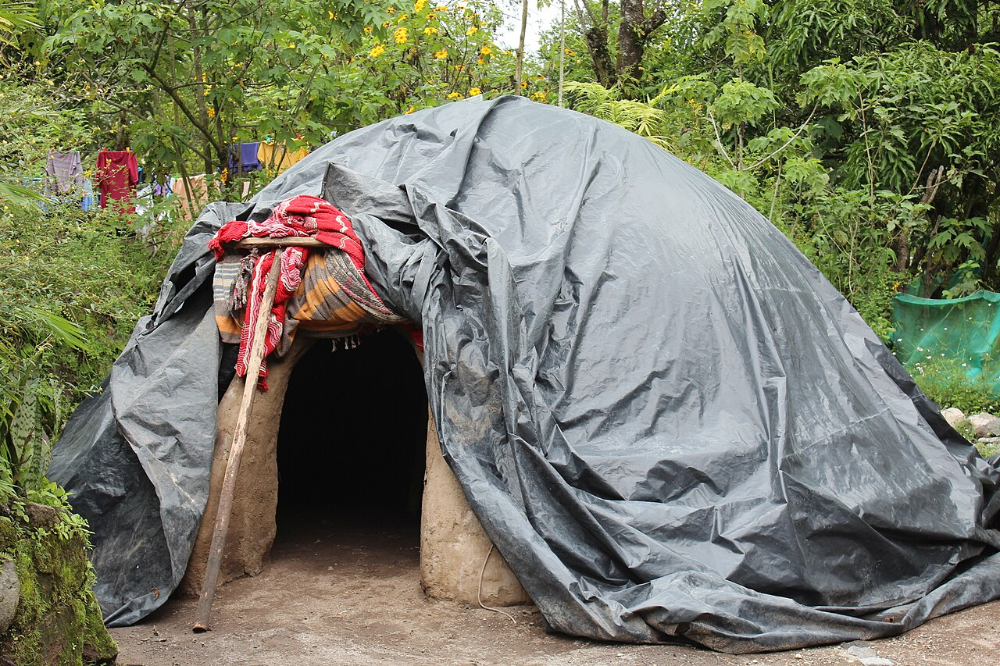
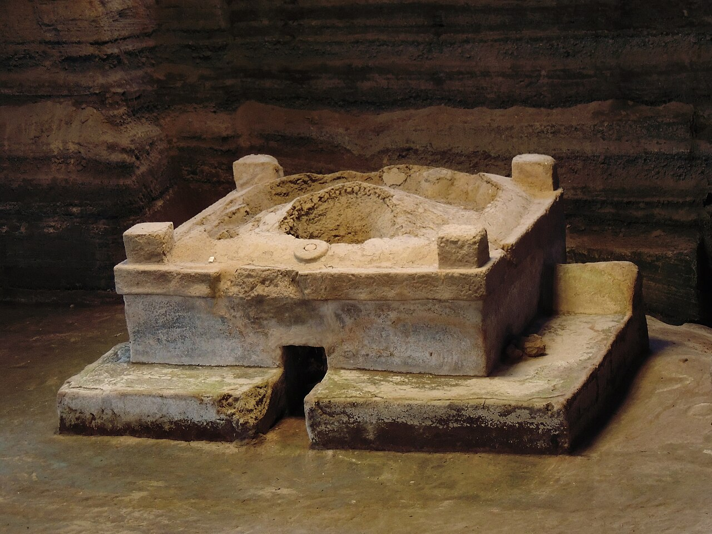
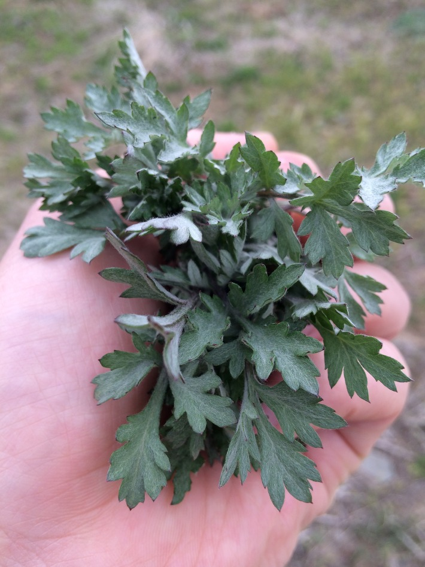
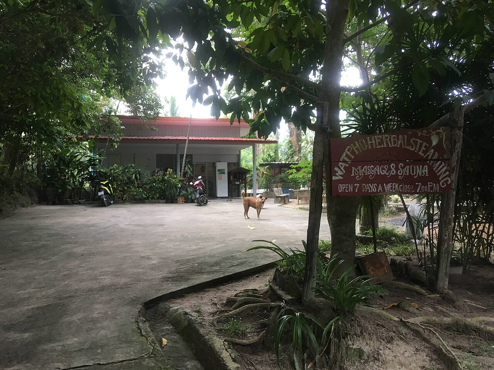
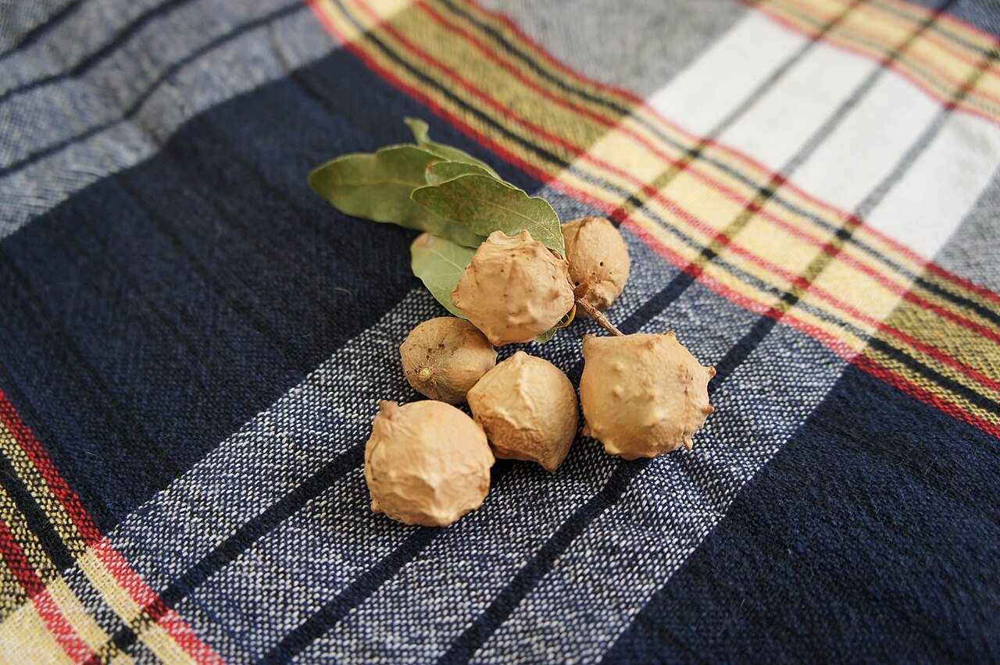
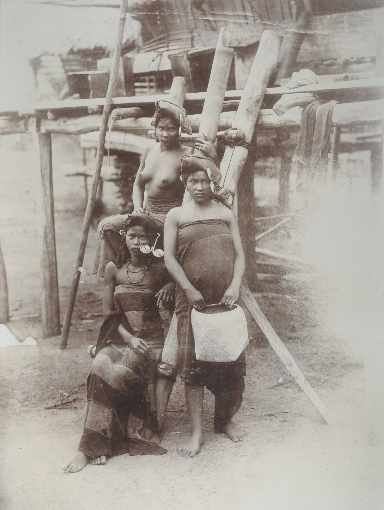

上一篇寫〈坐在一碗溫熱的藥草上〉的時候，我順手查了一下：除了印度，還有哪些地方的女人會這樣照顧自己？
結果一查，停不下來。
在彼此沒有見過面、語言也不通的地方，女人們用著不同的植物、不同的器具，卻做著幾乎一模一樣的事：生完孩子之後，讓溫熱的蒸氣，慢慢照顧那個最辛苦的地方。
這一篇，想帶妳繞地球一圈。
墨西哥與中美洲：像子宮一樣的土窯

在墨西哥和中美洲，有一種用石頭和泥土蓋成的圓頂蒸氣屋，叫 Temazcal（泰馬斯卡爾）。屋裡燒熱石頭、潑上藥草水，整間小屋就充滿了蒸氣。
根據 16 世紀西班牙傳教士留下的紀錄，阿茲特克的產婆會為產婦準備 Temazcal，生產之後再讓媽媽回到蒸氣裡發汗，並加入芳香植物，幫助乳汁分泌。[1] 殖民時期的瑪雅語字典裡，「蒸氣浴」的解釋之一，就是「產後女人的沐浴」。[2]
有學者注意到，Temazcal 的爐口在當地語言裡，也帶著「肚臍」的意思。[2] 走進一間溫暖、黑暗、低矮的圓頂小屋，很像回到子宮裡。

直到今天，瓜地馬拉 Q'eqchi'（克切）瑪雅族的女人，仍會用藥草蒸氣照顧產後的身體。[3] 在中美洲的西班牙語裡，這種坐在藥草蒸氣上的照顧，常被叫做 Bajos。
韓國：一把艾草

在韓國，會陰薰蒸叫「좌훈」（坐薰），最常用的是艾草，所以也叫「쑥좌훈」（艾草坐薰）。
韓國傳統的坐月子叫「三七日」，大約三個禮拜，要避開冷風、少碰冷水。[4] 現在很多韓國媽媽住在月子中心，同時搭配韓醫的產後調理，坐薰就是其中一種。[5]
2008 年，韓國有一份訪談研究，請 15 位做過艾草坐薰的女性說說她們的經驗。她們大多在家裡、韓醫院或「艾草房」裡做，一次大約 30 分鐘，說最有感的是放鬆、身體變暖、睡得比較好；但也有人起水泡、頭痛、發癢。[6]
這份研究讓我很有共鳴的，是它的誠實：好的感受和不好的經驗，被放在一起說。
泰國：靠近火

泰國的產後照顧，有一個很美的名字：Yu Fai（อยู่ไฟ），意思是「靠近火」。傳統上，產婦會在火堆旁休養，讓身體保持溫暖。
藥草蒸氣浴是其中很重要的一部分，常用香茅、檸檬葉、薑黃和樟腦。[7] 一項跨國研究在泰國春武里府訪問當地女性，有 67% 的人做過陰道相關的照護（包含蒸氣），而在生產之後，比例高達 85.5%。[8]
今天在曼谷，還有結合藥草蒸氣、藥草浴、鹽罐熱敷和綁腹的 Yu Fai 產後療程。[7] 鹽罐熱敷和綁腹，正好也是我在花蓮跟 Sonia 老師學的項目，讀到這裡，我有一種遇見遠房親戚的感覺。
馬來西亞：坐在有洞的椅子上

馬來族的坐月子叫 Berpantang，一般是 44 天，有的家庭會延長到 100 天。[9] 這段時間裡，除了飲食、按摩、熱敷和綁腹，還有一項叫 Bertangas 的會陰薰蒸。
做法跟我現在用的很像：媽媽坐在一張中間挖空的椅子上，讓下面那桶藥草的蒸氣或煙往上照顧會陰。常用的藥草包括薑黃，和一種叫 Manjakani（沒食子）的植物。[9]
傳統上，大家相信 Bertangas 可以消腫、去除異味、幫助傷口癒合、讓骨盆底緊實。不過要誠實地說：這些都還是傳統的說法，我沒有查到針對 Bertangas 的臨床試驗。[9]
印尼：丁香和肉豆蔻的蒸氣

在印尼北蘇門答臘，卡羅巴塔克族（Karo Batak）有一種蒸氣浴叫 Oukup（歐庫普），用丁香和肉豆蔻葉等藥草煮出蒸氣，傳統上用來照顧產後的傷口。
我在上一篇提過，印尼有幾項關於 Oukup 的小型研究，結果互相矛盾：有的說傷口好得比較快，有的看不到差別。[10]
非洲：讓我停下來的那一段
在非洲，也有用蒸氣照顧陰部的習俗。
世界衛生組織（WHO）曾在莫三比克、南非、印尼、泰國四個國家調查女性的陰道照護習慣。[11] 在莫三比克的太特省，一份訪問了 919 位女性的調查發現，在懷孕、生產和產後期間，有 39% 的人用過蒸氣。[12]
可是讀下去，我心裡一沉。
在這兩個非洲調查點，很多女性用蒸氣、用藥草，是為了讓陰道「變緊、變乾」，好讓伴侶在性行為裡比較愉悅。[8] 一篇系統性回顧也發現，這些陰道相關的做法沒有保護女性免於感染的效果，有些甚至可能有害。[13]
我心疼那些女人。同樣是一團蒸氣，有的是為了好好照顧自己，有的，卻是為了別人。
西方：當它變成一種流行
2015 年，美國演員葛妮絲・派特洛的生活品牌 Goop 推薦了加州一間 Spa 的艾草蒸氣，說它能「清潔子宮」。[8] 從那之後，會陰薰蒸在歐美變成一種流行的養生療程。
美國婦產科醫師 Jen Gunter 很快就公開反駁：陰道本來就會自我清潔，不需要被「清」。[8]
一個在原本的文化裡，由產婆、長輩陪著做的產後照顧，到了另一個地方，變成了一張價目表上的「排毒療程」。我不覺得這是壞事，但我會希望，它被帶走的時候，那份陪伴和分寸，也一起被帶走。
一張表，看各地的差別
| 地區 | 名稱 | 怎麼蒸 | 常用藥草 | 什麼時候 | 儀式的特色 |
|---|---|---|---|---|---|
| 墨西哥、中美洲 | Temazcal（泰馬斯卡爾） | 走進圓頂土窯，熱石潑水，全身在蒸氣裡發汗 | 芳香植物 | 產前、產後 | 產婆陪著進去、在蒸氣裡按摩；土窯象徵子宮與肚臍 |
| 中美洲（瑪雅） | Bajos | 坐或蹲在一盆藥草蒸氣上 | 依家族與產婆的傳承 | 產後 | 現在仍由瑪雅族女人代代相傳 |
| 韓國 | 쑥좌훈（艾草坐薰） | 坐在艾草的蒸氣或煙上，約 30 分鐘 | 艾草 | 產後三七日前後，也用在平日保養 | 在家、韓醫院或「艾草房」做；已發展成現代的店家 |
| 泰國 | Yu Fai（靠近火） | 火堆旁休養，加上全身藥草蒸氣浴 | 香茅、檸檬葉、薑黃、樟腦 | 產後 | 和鹽罐熱敷、綁腹一起做，是一整套產後照顧 |
| 馬來西亞 | Bertangas | 坐在中間挖空的椅子上，下面一桶藥草蒸氣或煙 | 薑黃、沒食子 | 產後 44 天的 Berpantang 期間 | 和熱敷、綁腹、藥草浴、飲食禁忌一起進行 |
| 印尼北蘇門答臘 | Oukup（歐庫普） | 藥草蒸氣浴 | 丁香、肉豆蔻葉 | 產後 | 卡羅巴塔克族的傳統，用來照顧產後傷口 |
| 印度 | Dhupana（藥薰） | 燒草藥或乳香，用煙薰房間與下身 | 草藥、乳香 | 產後 40 天的 Jaapa 期間 | 由 Dai 或家中婦女在沐浴後進行 |
| 莫三比克 | （調查中未記載當地名稱） | 蒸氣與藥草 | 未詳 | 孕期、生產、產後，也用在性生活 | 有些是為了伴侶而做，不全是為了自己 |
| 我的療程 | 會陰藥草薰蒸 | 坐在薰蒸椅上，披斗篷，用藥草水的蒸氣，約 20 分鐘 | 依體質與是否親餵調整配方 | 依產後週數與當天狀況判斷 | 先諮詢、先用手試溫度、結束後靜養；隨時可以喊停 |
← 手機上可以左右滑動表格 →
把這張表攤開來看，會發現三件很有意思的事。
一、蒸的方式，大致分成三種。 一種是整個人走進蒸氣裡，像墨西哥的土窯和泰國的蒸氣浴；一種是坐在一盆蒸氣上，只照顧下身，像韓國、馬來西亞和瑪雅的 Bajos；還有一種是用煙，像印度的藥薰和部分韓國的艾草燻。
二、藥草多半是溫的、香的。 艾草、薑黃、丁香、香茅、樟腦，用中醫或阿育吠陀的語言來說，大多屬於溫性、芳香的植物。產後怕冷、怕風，各地的女人好像都選了「能讓身體暖起來」的植物（這是我的觀察，不是研究結論）。
三、它從來不是單獨存在的。 幾乎每一個地方，薰蒸都只是一整套產後照顧裡的一環：泰國有鹽罐和綁腹，馬來西亞有熱敷和飲食禁忌，墨西哥有產婆的按摩，印度有每天的溫油。薰蒸之所以有意義，是因為它旁邊，一直有人在照顧那個媽媽。
繞了一圈之後
讀完這些，我心裡留下的，是兩件事。
第一件事是：女人的身體，好像天生就知道該往哪裡去。 在沒有網路、沒有彼此聯絡的年代，墨西哥、韓國、泰國、馬來西亞的女人，不約而同地，都在生完孩子之後，讓自己坐到一團溫暖的蒸氣上。
第二件事是：同樣的做法，可以是照顧，也可以是壓力。 決定它是哪一種的，不是蒸氣本身，而是——這是為了誰？她是自己選擇的嗎？她說「太燙了」的時候，有人停下來嗎？
所以在我的療程裡，我最在意的不是用了哪一種藥草，而是這三件事：溫度要她覺得舒服、時間由她的身體決定、她隨時可以說「不要」。
邀請妳先停一下，深吸一口氣，想像自己坐在一團溫熱的藥草蒸氣上。
那一刻，妳和世界各地、好幾百年來的女人，坐在同一個圓裡。🌿
如果妳想親自體驗看看，可以讀讀上一篇〈坐在一碗溫熱的藥草上〉，或私訊我，我們先聊聊妳現在的身體。💛
資料來源
- National Geographic〈Aztec midwife: practical pregnancy care〉（引 16 世紀 Sahagún《新西班牙諸物通史》）：連結（綜合）
- Historical MX〈Pre-Columbian Midwifery Practices and Beliefs of Mesoamerican Cultures〉：連結；Mikkel Aaland〈Origin of the Mayan temescal〉：連結（綜合）
- De Gezelle J.（2014）*Q'eqchi' Maya Reproductive Ethnomedicine*，經 Wikipedia: Vaginal steaming 轉引（學術・二手）
- 京鄉新聞〈산후조리, 필수인가? 사치인가?〉：連結（綜合・媒體）
- The Korea Times〈How to treat postpartum mothers with Korean medicine〉：連結（綜合・媒體）
- Lee 等（2008）女性艾草坐薰經驗質性研究，《Journal of East-West Nursing Research》：KoreaScience（學術，經搜尋摘要整理）
- Tatler Asia〈Bathing rituals around Asia〉：連結（綜合・媒體）
- Wikipedia〈Vaginal steaming〉（引 Hull 等 2011 *Journal of Women's Health*；Goop 2015；Gunter 2015）：連結（綜合）
- 馬來傳統產後照護相關研究：UKM AJEHH；馬來西亞衛生部〈Postnatal〉指引：連結（學術・官方，經搜尋摘要整理）
- 印尼 Oukup 與會陰傷口癒合的準實驗研究：AIHD-MU（學術・小型研究）
- WHO〈A multi-country study on gender, sexuality and vaginal practices〉：連結（官方）
- 莫三比克太特省陰道照護調查（2007，n = 919）：ANU Research Portal（學術，經搜尋摘要整理）
- Hilber 等（2010）陰道內照護與 HIV、感染的系統性回顧，*PLoS ONE*：連結（學術）
圖片來源
- 〈Temazcal Comalteco〉，Jassonfoto，CC BY-SA 4.0，via Wikimedia Commons
- 〈Temazcal en Joya de Cerén〉，BelenM，CC BY-SA 3.0，via Wikimedia Commons
- 〈Artemisia princeps 4〉，날건달，CC BY 4.0，via Wikimedia Commons
- 〈Wat Pho Herbal Steaming〉，Christophe95，CC BY-SA 4.0，via Wikimedia Commons
- 〈Mazî Dêrika Çiyayê Mazî〉，MikaelF，CC BY-SA 3.0，via Wikimedia Commons
- 〈Karo Batak women on the east coast of Sumatra, circa 1900〉，Stafhell & Kleingrothe，KITLV，公有領域，via Wikimedia Commons
本文為資訊整理，不構成醫療建議，也不能取代妳與醫師、助產師、兒科醫師的直接討論。